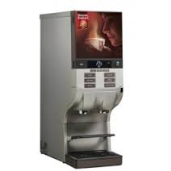

In deze opdracht moest een product geanalyseerd worden aan de hand van acht punten. Zo moesten er in deze opdracht user stories gemaakt worden. Verder moest er ook nog een voorstel gedaan worden wat er te verbeteren viel aan het product. In deze opdracht staat de tandenborstel centraal.
In deze opdracht moesten er aan de hand van twee persona's en een customer journey drie concepten bedacht worden. Deze concepten moeten ervoor zorgen dat meer mensen gezonder gaan leven. Met behulp van de de persona's en customer journey is er onder andere een competitieve fitness app bedacht.

In deze opdracht moest er een nieuwe interface voor de koffieaparaten van de UvA bedacht worden. Hierbij stond centraal dat de favoriete producten van de gebruiker meteen te selecteren waren. In deze opdracht had ik de rol van interactie.